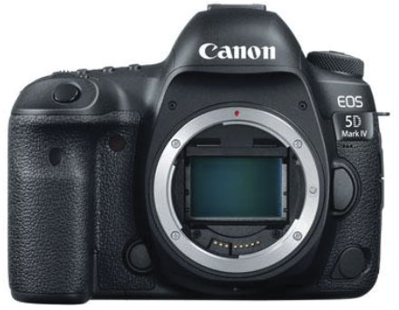

What Makes a Camera the Best?
There are many photographers who remain brand loyal and assert preference over popular and traditional brands such as Canon, Nikon, or Fujifilm. But as Sony has shown, brand is no longer an indication of “the best”. Recently, a study showed that the best-selling images on 500px were taken by a consumer grade Olympus – not even one of the big three!
Outside of brand, the most obvious answer to this question is that the best camera of 2018 is the camera that is best for you. Simply put, the best camera depends on your needs and these needs point to specific features and uses.
Sure, a DSLR may shoot only 4k video, but maybe it’s ahead of the curve in still photography. The best is always relative. Rarely is there a significant difference in image quality and performance at the top. It often comes down to extra features (which you may or may not need!) and newer design. These are the features that we considered when evaluating the best cameras for 2018:
Cost – Not surprisingly, most top-of-the-line cameras are expensive. But top-of-the-line doesn’t necessarily equate to best value. In this guide to the best cameras for 2018, we aim to get you the best bang for your buck. But fair warning – two out of our three recommendations are expensive. In these cases, we felt the cost was associated with enough value to justify the recommendation. We’re planning another article for this holiday season that focuses exclusively on the best cameras under $500.
Ease of Use – Some cameras seem like they necessitate a PhD for operations. Comfort and ease of use is important to today’s consumer and we took this into consideration in our guide to the best cameras of 2018.
Features – Gone are the days when the number of MPX a camera wielded served as an excellent indication of overall quality. While resolution stats have become moot, other important features certainly haven’t. Today, it’s all about what sensor, image stabilization, and autofocus a camera has. Features like body sensors, along with memory volume and speed, were included in the list of features important in the evaluation of the best cameras of 2018.
Professional DSLR Camera: Canon EOS 5d Mark IV MSRP: $3,299
The 5d is a tool that plenty of professional photographers swear by. It’s recent reincarnation just edged over Nikon (yet again) in the 2017-2018 EISA awards, bringing home three different category wins. This camera also won the Technical Image Press Association (TIPA) award and received a gold standard from DPReview.
Main Features
- Max battery life 1800 shots (with BG-E20 Battery Grip)
- EF Mount
- 30.4 MPX CMOS Sensor
- Self-Cleaning Sensor
- Dust Deletion feature
- 4k Video
- Pentaprism viewfinder
- Fixed Screen
- Dedicated AF sensor with 2 focusing modes
- 61 point reticular AF II autofocus system
- 7fps continuous shooting
- ISO50-102400
- WIFI/NFC/GPS
- Dual Card Slots (CF/SD)
Notable New Features for 2018
- Improvement in dynamic range
- High quality 4k video recording capacity
- Faster autofocus
- New Dual Pixel Raw used to create better background blur and subject sharpness.
Cons
The biggest standout among cons is the continuous shooting mode. 7Fps isn’t terrible, but if you compare it to the mirrorless Sony A9 with 20fps, it certainly doesn’t look good. But for the best camera of 2018, many professionals tend to be more concerned with the speed and autofocus, which is why the 5D Mark IV wins this category hands down.
Why It’s the Best
The reason this model won out over Nikon has a lot to do with the autofocus and the sensor. While a favorable contender, the Nikon D850 (their newest full-frame model) hasn’t quite had the “wow” impression that most people expected from it; while it’s certainly still a great camera, Canon is simply better when evaluating all-around features and performance.
Mirrorless Camera: The Sony
MSRP: $4,499
There are many photographers who remain brand loyal and assert preference over popular and traditional brands such as Canon, Nikon, or Fujifilm. But as Sony has shown, brand is no longer an indication of “the best”. Recently, a study showed that the best-selling images on 500px were taken by a consumer grade Olympus – not even one of the big three!
Outside of brand, the most obvious answer to this question is that the best camera of 2018 is the camera that is best for you. Simply put, the best camera depends on your needs and these needs point to specific features and uses.
Sure, a DSLR may shoot only 4k video, but maybe it’s ahead of the curve in still photography. The best is always relative. Rarely is there a significant difference in image quality and performance at the top. It often comes down to extra features (which you may or may not need!) and newer design. These are the features that we considered when evaluating the best cameras for 2018:
Cost – Not surprisingly, most top-of-the-line cameras are expensive. But top-of-the-line doesn’t necessarily equate to best value. In this guide to the best cameras for 2018, we aim to get you the best bang for your buck. But fair warning – two out of our three recommendations are expensive. In these cases, we felt the cost was associated with enough value to justify the recommendation. We’re planning another article for this holiday season that focuses exclusively on the best cameras under $500.
Ease of Use – Some cameras seem like they necessitate a PhD for operations. Comfort and ease of use is important to today’s consumer and we took this into consideration in our guide to the best cameras of 2018.
Features – Gone are the days when the number of MPX a camera wielded served as an excellent indication of overall quality. While resolution stats have become moot, other important features certainly haven’t. Today, it’s all about what sensor, image stabilization, and autofocus a camera has. Features like body sensors, along with memory volume and speed, were included in the list of features important in the evaluation of the best cameras of 2018.
Professional DSLR Camera: Canon EOS 5d Mark IV MSRP: $3,299
The 5d is a tool that plenty of professional photographers swear by. It’s recent reincarnation just edged over Nikon (yet again) in the 2017-2018 EISA awards, bringing home three different category wins. This camera also won the Technical Image Press Association (TIPA) award and received a gold standard from DPReview.
Main Features
- Max battery life 1800 shots (with BG-E20 Battery Grip)
- EF Mount
- 30.4 MPX CMOS Sensor
- Self-Cleaning Sensor
- Dust Deletion feature
- 4k Video
- Pentaprism viewfinder
- Fixed Screen
- Dedicated AF sensor with 2 focusing modes
- 61 point reticular AF II autofocus system
- 7fps continuous shooting
- ISO50-102400
- WIFI/NFC/GPS
- Dual Card Slots (CF/SD)
Notable New Features for 2018
- Improvement in dynamic range
- High quality 4k video recording capacity
- Faster autofocus
- New Dual Pixel Raw used to create better background blur and subject sharpness.
Cons
The biggest standout among cons is the continuous shooting mode. 7Fps isn’t terrible, but if you compare it to the mirrorless Sony A9 with 20fps, it certainly doesn’t look good. But for the best camera of 2018, many professionals tend to be more concerned with the speed and autofocus, which is why the 5D Mark IV wins this category hands down.
Why It’s the Best
The reason this model won out over Nikon has a lot to do with the autofocus and the sensor. While a favorable contender, the Nikon D850 (their newest full-frame model) hasn’t quite had the “wow” impression that most people expected from it; while it’s certainly still a great camera, Canon is simply better when evaluating all-around features and performance.
Mirrorless Camera: The Sony
MSRP: $4,499
Conclusion
Much of choosing the best camera for 2018 has to do with your needs. If you’re already an enthusiast of a certain brand, then there are definite advantages to being able to continue using the same gear. However, it’s clear that Sony is going to be the brand to watch in 2018. Their push for innovation has pulled them ahead of more traditional brands. At least this year.
Here is a summary of our recommendations
- The best professional camera of 2018: Canon EOS 5d Mark IV
- The best mirrorless camera of 2018: Sony
- The best fixed-lens camera of 2018: Sony RX100V
Leave a Reply